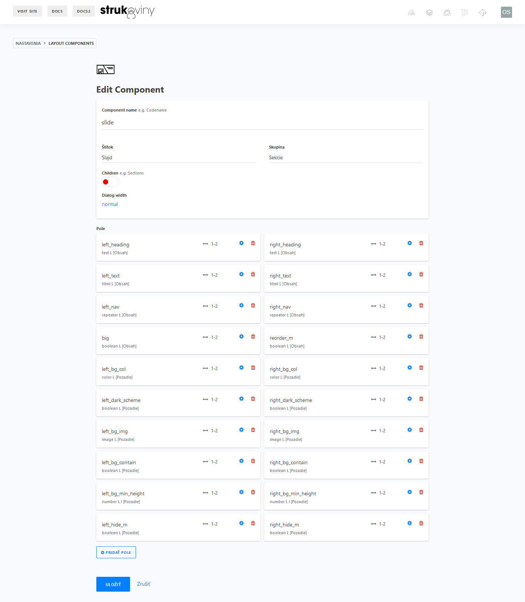

2. Administrácia CockpitCMS
Prečo CockpitCMS
Podstatou administrácie cez CockpitCMS má byť rýchlosť, jednoduchosť, jednoznačnosť pre administrátora (resp. editora) a zároveň pocit všemocnosti pre developera.
CockpitCMS je ideálnym riešením (na výnimku dokumentácie), pretože pre developera umožňuje kompletnú nastaviteľnosť a rozšíriteľnosť.
Alternatívne riešenie štýlu Wordpress má síce väčšie pokrytie podpory, no zároveň veľmi nízku flexibilitu pre modernú dobu webových prezentácií, pretože pre získanie ideálneho dizajnérskeho dojmu je často nutné robiť kompromisy nielen z hľadiska developera, ale aj editora.
Wordpress má miesto medzi blogmi a jednoduchými klasickými webmi, nie modernou dizajnérskou prezentáciou.
Prečo Svelte?
Pre front-end bola volená javascript varianta namiesto SSR riešenia ako rôzne PHP frameworky (napr. Laravel) kvôli zvýšenej rýchlosti vývoja (neznalosť PHP frameworkov), jednoliatosti kódu (všetko verejné ide cez Svelte s jednotným syntaxom, Laravel má rôznorodé rozdelenie obsahu) a jednoduchej rozšíritelnosti (tvorba nového komponentu a napojenie na API je otázka 5 min až max. pol-hodiny).
V rámci front-end frameworkov je Svelte najrýchlejšia a najjednoduchšia možnosť oproti monolitickému Reactu alebo modernejšiemu no o trochu syntakticky komplikovanejšiemu Vue (pôvodne bol koncept práve tohto projektu robený vo Vue a viaceré dôvody (syntax a rýchlosť) ma viedli k 100% migrácií na Svelte).
Pre editora
Hlavné rozhranie
| Prvá (a hlavná) časť ktorú editor vidí - všeobecná navigácia administrácie, t.j. zoznam štruktúr |
Používateľ skupiny Editor je hneď po prihlásení hodený do zoznamu štruktúr, ktoré definujú webovú stránku, z čoho najpodstatnejšou sú Stránky. Dodatočne má rýchly prístup k jednotke všeobecných Nastavení webu.
| Zoznam stránok (po rozkliknutí Stránky v zozname štruktúr) |
Okrem schopností upravovať zopár jednoznačných štruktúr môže pristupovať k a organizovať médiá, prípadne upraviť pár detailov svojho účtu. Nič viac, nič menej, podstatou je jednoduchosť, aby sa editor necítil preťažený.
Editácia stránky
Po výbere štruktúry stránok z hlavného rozhrania má prístup k jednotlivým stránkam, kde jasne vidí stav ich zverejnenia, prístupovú podadresu (slug) a samozrejme, ich názov.
| Jednotlivé polia z ktorých je zložená úprava špecifickej stránky pre editora. Hlavnú roľu hrajú komponenty (žltá farba). |
Po rozkliknutí má editor možnosť vyplniť všetky potrebné či nepotrebné polia a zkonštruovať teda nejakú ideu o budúcej stránke. Nechýba ani možnosť lokalizácie do rôznych jazykov.
Hlavnou časťou je plocha pre pridávanie komponentou, ktorá je nielen miestom kde editor strávi najviac času, ale aj miestom ktoré developer najčastejšie prispôsobuje a upravuje.
 |
|---|
| Po kliknutí na veľké plus si stačí vybrať vhodný komponent. |
Jednotlivé komponenty sa dajú zoraďovať, prehadzovať a hlavne rozkliknúť pre úpravu pre-editora-podstatných častí. Detaily štylizácie, či dodržiavanie nejakého dizajnérskeho kódexu je teda technicky zaručené, keďže úprava týchto možností siaha len do istej miery.
| Špecifický komponent sa dá jednoducho upraviť rozkliknutím, všetky polia majú v rámci administrácie zrozumiteľné popisky a jednotné zobrazenie, zároveň sú na pozadí presne definované. Táto definícia je odzrkadlená aj na API stránky. |
Živá ukážka
Okrem rozkladania prvkov a ich hodnôt má editor možnosť si ich priamo pozrieť cez live preview kliknutím na oko. Zmeny na ukážke sa prejavia takmer ihneď, jedná sa o perfektný spôsob ako si pozrieť akúkoľvek prezentáciu a vďaka manažmentu zverejňovania aj dlho predtým než bude vôbec zverejnená.
| Všetky komponenty sú upravovateľné takisto ako aj v celoplošnom rozložení aj tu. |
Ako čerešnička na torte sú tlačítka pre prispôsobenie zobrazenia podľa druhu zariadenia, aby mal editor naozaj dôveru, že prezentácia vyzerá perfektne na akomkoľvek zariadení.
Pre developera
Pokiaľ má používateľ CockpitCMS účet v skupine Admin, zobrazia sa skryté možnosti úprav CMS, doplnkov, stránky, skryté štruktúry, úpravy polí, druhov polí (field-types), popiskov i nastavení pre všetky štruktúry.
 |
|---|
| Hlavná administrácia. Množstvo skrytých zákutí pre vyšpekulovanie ideálneho editovacieho rozloženia. |
Nepoužívané schopnosti ako tvoriť regióny či formuláre, ktoré sa môžu eventuelne zísť, sú pred editorom pre zachovanie jednoduchosti skryté.
Menu systému, ktoré sa zobrazí po kliknutí na logo. Editora logo jednoducho presmeruje na zoznam štruktúr, admin má avšak rôzne možnosti, jednou z nich je aj pohrávať sa s GraphQL API rozšírením pre vlastné implementácie. |
 |
|---|
Špeciálny doplnok Layout-Components umožňuje priamo definovať jednotlivé komponenty v rámci CMS, ktoré budú implementované cez Svelte. Tento doplnok bol manuálne upravený o dodatočnú podporu ikón a lepšie zobrazenie súhrnných informácií počas definovania. |
|  |
|---|
| Všetky polia sú zoradené presne tak ako ich bude mať prístupné aj samotný editor. Každé má zároveň tlačítko nastavení pre priradenie popiskov, skupín, dodatočných možností, typu a pod. |